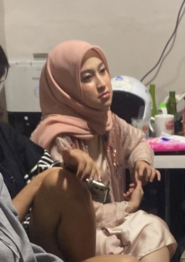

Story First Time Meet: Kamu 📊❤️
Cerita Pertamakali ketemu:

jadi waktu itu bt liburan diambon pas SMA terus sering main diBTN nah pas di sana bt pertama kali liat di depan kediaman. Waktu itu penasaran bangetttt tapi disitu hanya kagum dikarnakan hanya sekedar iat deng penasaran dan seng ekspek juga bakalan sedekat ini. Nah pertamakali bicara dan kenalannya pas waktu telfonan pas dapa kasi kanal dari kaka Fira, disitu bt canggung bingung mau ngomong apakarna pertama kali bt nilai kira tu kayak Fineshyt pokoknya kek seleb lah bagitu lah pas habis kenalan tuh lalu kaka fira bilangmau chatan sg deng dia? tapi bt masi bingung deng anggap pasti jua kia bilang sok asik tapi kaka fira kasi yakin sa par brani nah abis itu bt mulai follow kia di tik tok dan seng lama dari situ juga kaka fira kasi kia nomor hp karna bt minta sih wkwkwk, awalnya belum berani par chat berani nya pas bt dari jogja ke ambon dan itu after katong baku dapa selang 2 hari baru berani chat di wa tanggal 14 februari pas hari valentine, di hari yang sama juga bt beranikan diri par chat to the point buat pdkt, tapi pdkt itu seng lama maybe canggung dan baru banget. Habis itu bt bale ke masohi dan katong perbincangan disitu masih kayak apa ya? kayak malu malu jadinya katong ada jeda hampir sebulan seng chat, chatnya lanjut waktu bt bale ke ambon. Nah waktu diambon itu bt sudah pikir konsep par baku dapa jadi rencananya mau ajak jalan makan lalu main billiard tapi ada satu dan lain hal, pas bt su di ambon bagini pas mau ajak ehhh shakiranya sudah deng orang lain dari situ lalu katong kayaknya ada jeda komunikasi agak lama karna bt juga su bale ke jogja. Hubungan komunikasi yang lancar waktu shakiranya chat minta bantu nah disitu awalnya baru mau trobos wkwkwkwkwk. Bt barani trobos karna bt pikir katong dua dekat jua su agak lama dan bt jua su tau samua samua tentag kia dan disupport kaka fira, bulen, dani, ayaya ,aza, giran, dll dan bt teman teman walaupun ada beberapa bt teman yang cuma nilai dari cover yang bilang kayaknya shakira ni suka main cowok deh pokoknya kayak ada brengsek-brengseknya awalnya bt juga kedistrek namun makin kesini makin kenal padahal orangnya seng seperti ituu.
Peringatan: Klik tombol di bawah ini dengan kesiapan mental 100%. Keputusanmu akan mengubah sejarah dunia persilatan!